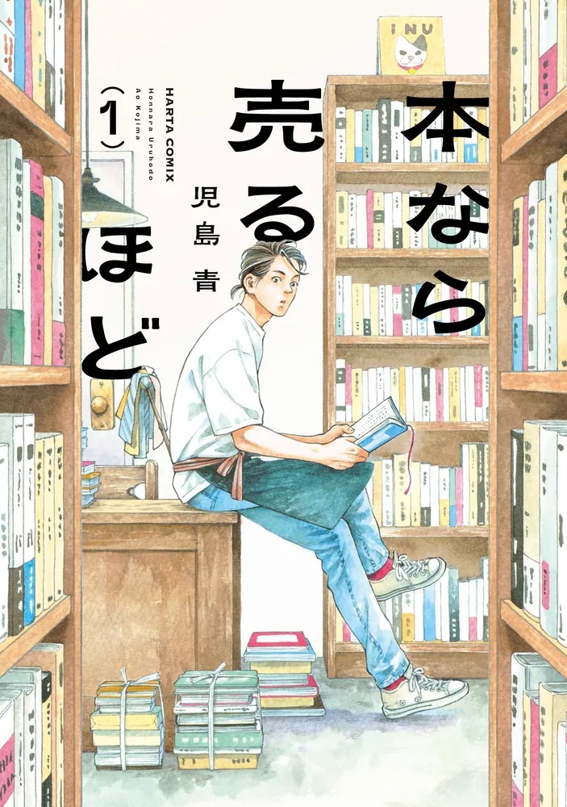
年輕店主一個人顧著街角的小舊書店「十月堂」，來的客人有常客、想長大的高中女生、來處理亡夫藏書的遺孀。每話一位客人、一本書，前一話的主角會在後面的故事裡再出現，慢慢連成一張人際網。愛書的人看了會很想找人聊書。
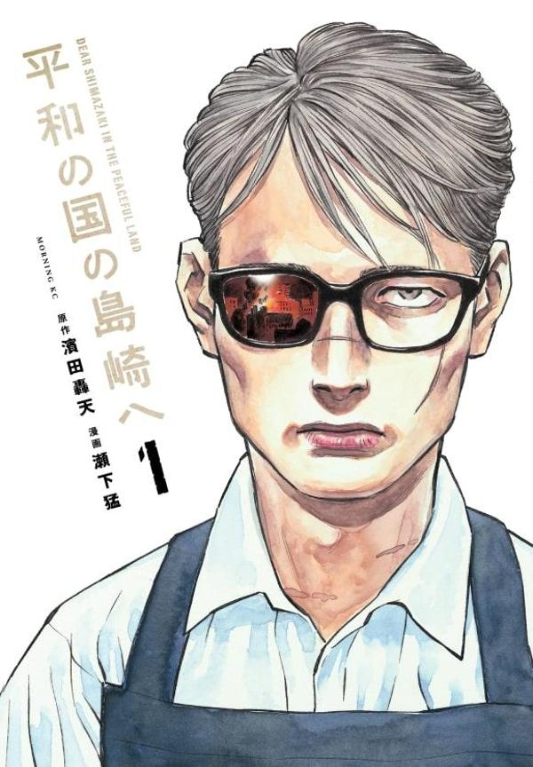
小時候被國際恐怖組織綁走、被養成戰鬥工作員的島崎，三十年後終於逃回日本，想過普通人的生活。可是過去不會輕易放過他。打鬥很狠，日常卻很溫柔，兩邊的落差就是這部的味道。
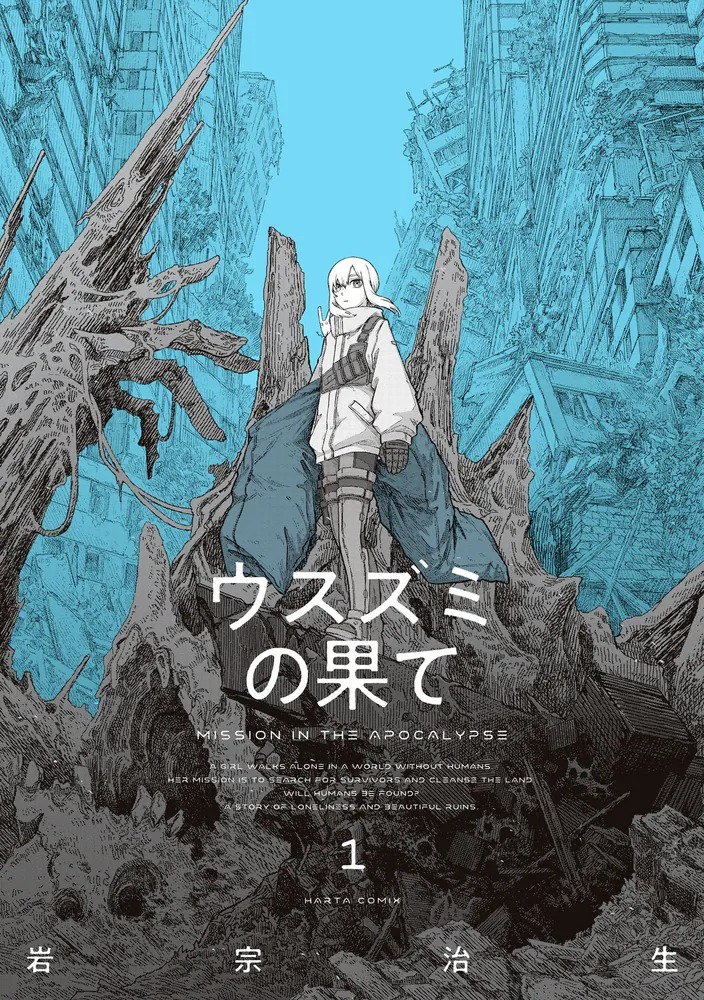
生命幾乎滅絕的地球上，一個少女獨自走著，任務是尋找倖存者、淨化土地。她遇到失去主人的機器人、還在執行命令的 AI，每一站都是一場孤獨和孤獨的相遇。作者很愛畫建築，廢墟畫面本身就值得慢慢翻。
有龍存在的世界裡，流放島上的少年伊鷺是能看見處刑對象記憶的斬首人。某天他遇到傳說中的名將，兩人的相遇把龍和整個世界捲了進去。這是很少見、畫工扎實的正統奇幻冒險。
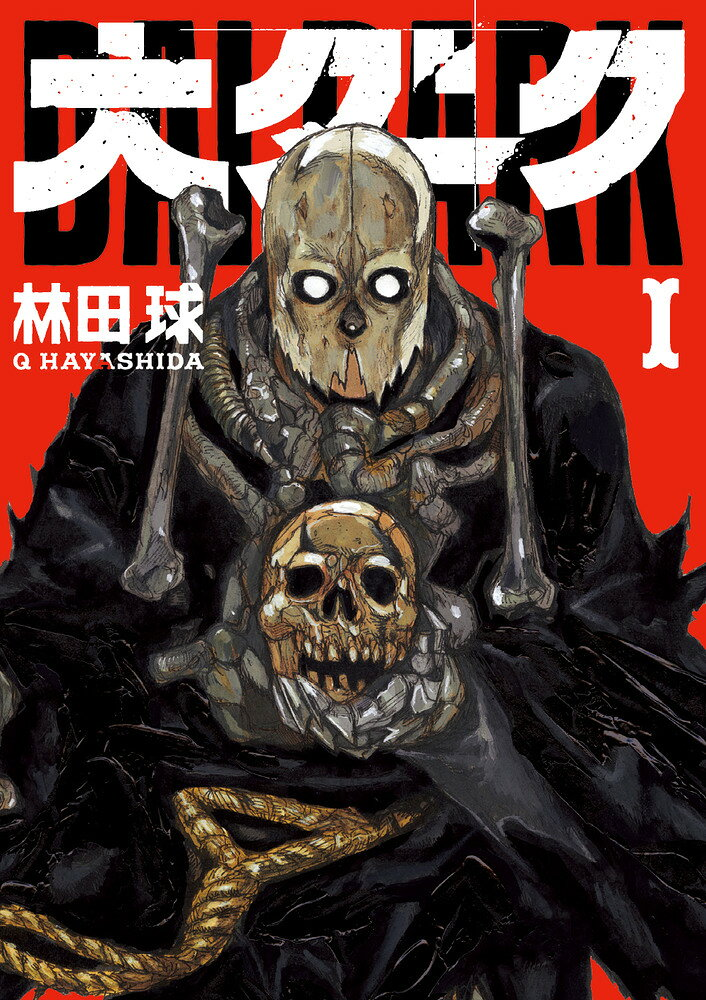
《異獸魔都》作者的新作，舞台換到宇宙。傳說骨頭能實現任何願望的少年桑可，被全宇宙追殺，只好和他的夥伴「黑暗行李袋」一路殺出去。血腥、搞笑又可愛，林田球那種髒髒的美術風格一點都沒變。
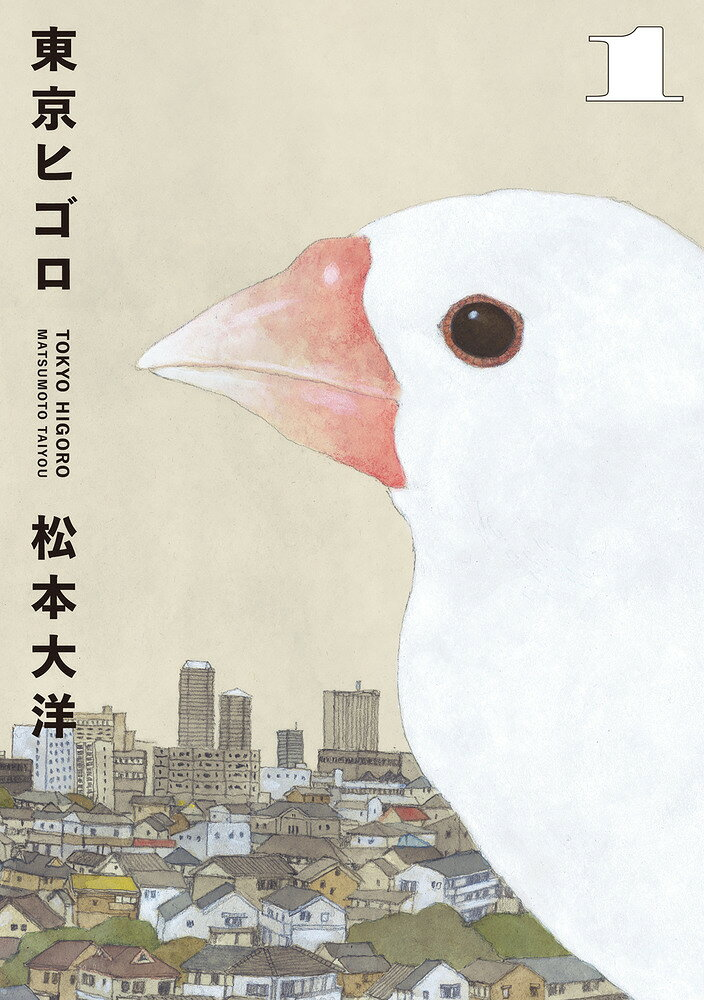
從大出版社提早退休的漫畫編輯鹽澤，想做一本自己理想中的漫畫雜誌，一個個去拜訪他相信的漫畫家。畫得出來的人、畫不出來的人、畫不好的人，各自的人生在東京交錯。《乒乓》作者寫「做漫畫的人」，三卷就完。
傳說有福神住過的小島上，一個國中女生遇到了來歷不明的生物「フクノカミ（福神）」，向它許願之後，島上的人開始一點點變了樣。不是突然嚇人，而是越來越不對勁的那種恐怖。作者是《刻刻》的堀尾省太。
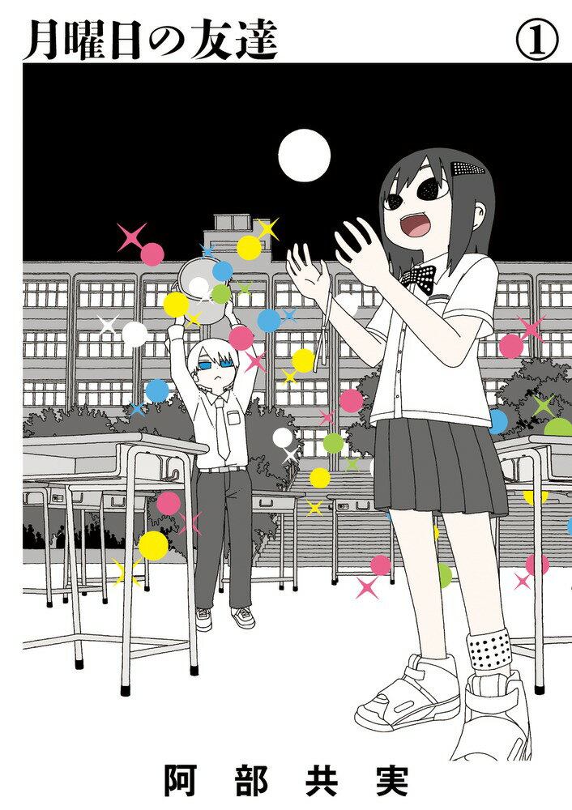
精力旺盛又個子小小的國中女生水谷，最討厭星期一。她遇到奇怪的男生月野，兩人約好每週一晚上見面。很短，但那種「還不想長大」的感覺會留很久。
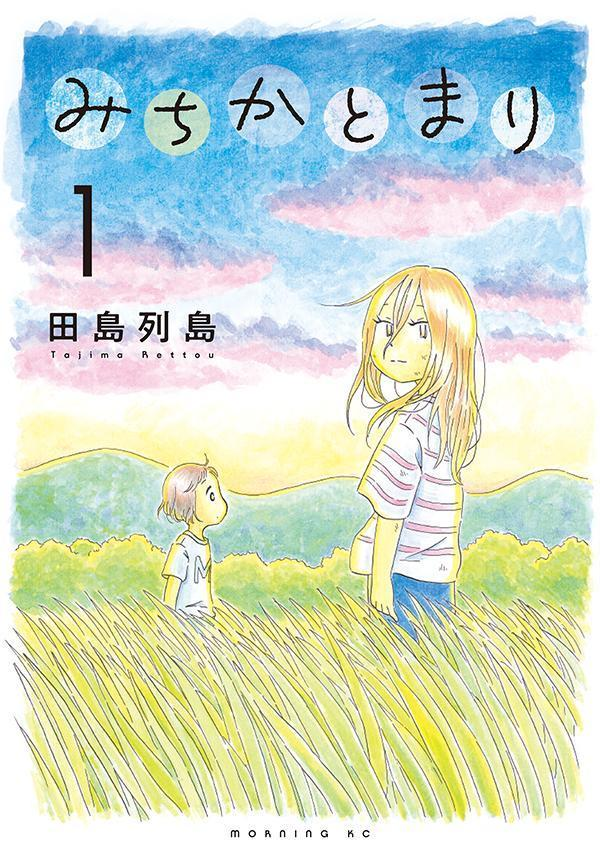
八歲那年夏天，茉里在竹林裡遇到一個不可思議的女孩未知華。未知華好像活在不同的規則裡，還從欺負人的同學身上拿走了很重要的東西。覺得自己要負責的茉里，跟著她踏出了「用語言理解的世界」之外。
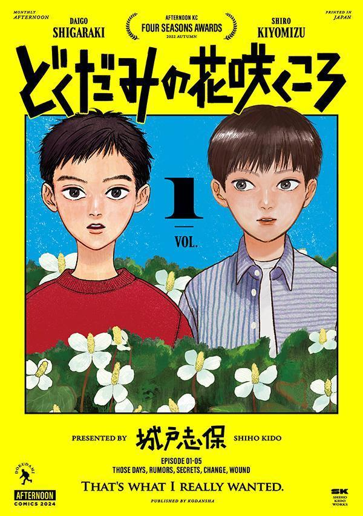
乖巧優等生清水，和脾氣暴躁、完全讀不懂的同學信樂，兩個個性相反的小學生成了朋友。故事很好笑，但一直有點不安，你永遠不知道下一頁信樂會做出什麼事。
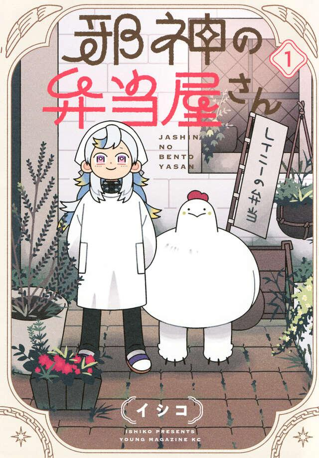
以「日行一善」為座右銘的便當店老闆蕾尼，其實是因為挑起戰爭而被罰變成人類的「神」。現在她活著的理由，是想明天便當要放什麼配菜。溫暖又有點苦的小故事，四卷剛好看完。
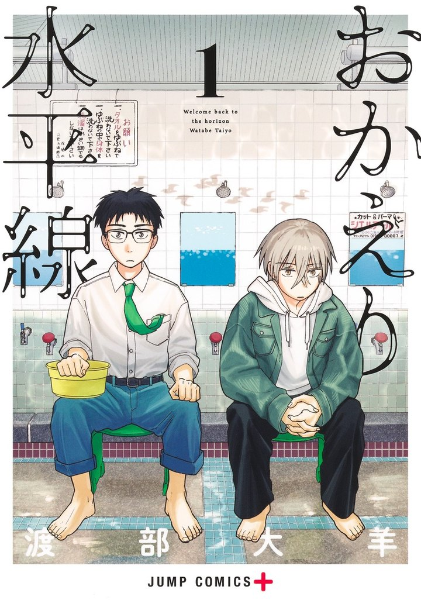
海邊小鎮，高中生遼馬跟爺爺一起經營錢湯。某天放學，一個叫玲臣的少年找上門，說自己是遼馬父親的私生子。以錢湯為舞台，一群高中生又苦又暖的故事。
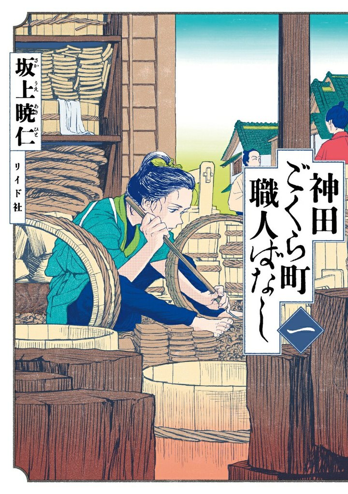
江戶時代，神田一帶住滿各行各業的職人：桶匠、刀匠、藍染、榻榻米、泥水匠。每篇跟著一位職人過一天，細節畫到讓人起雞皮疙瘩。沒什麼大事件，靠的是手藝和畫面。
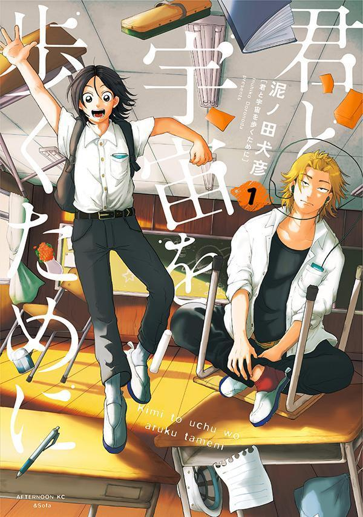
讀書打工都撐不久的不良高中生小林，班上轉來一個怪怪的轉學生宇野：被連續問話會僵住，沒辦法同時做好幾件事。看到宇野用各種方法努力生活，小林也想改變自己。不催淚，但很溫柔。
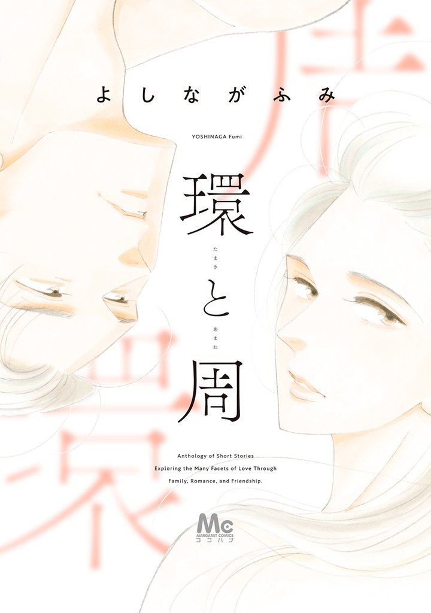
名字叫「環」和「周」的兩個人，在明治、戰後、七〇年代、現代等不同時代一次次相遇——有時是同學、有時是母女、有時是上司與部下。每篇都是一種「喜歡」的形狀，不只戀愛。《大奧》《昨日的美食》作者一本完結的短篇集，適合一個晚上讀完。
人類打贏外星人戰爭 50 年後，背著家裡債務的少女在除蟲公司打工清「宇宙害蟲」。某天被外星人抓走做實驗，醒來後右手會變成怪物……。笑點密、對白很嗆，但打鬥分鏡與灰階處理乾淨好讀，是近年少見畫面很「好看」的科幻動作喜劇。
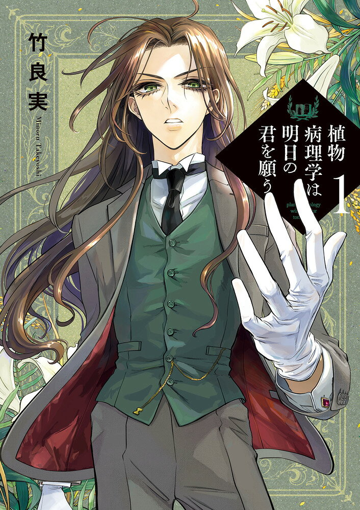
主角是大學裡的植物病理學者——「植物的醫生」。果樹成片枯死、農村怪病、甚至有人想用植物病搞農業恐攻，他要用顯微鏡和實驗把真相找出來。像醫療推理劇，只是病人是植物；看完會發現餐桌上的食物其實很脆弱。
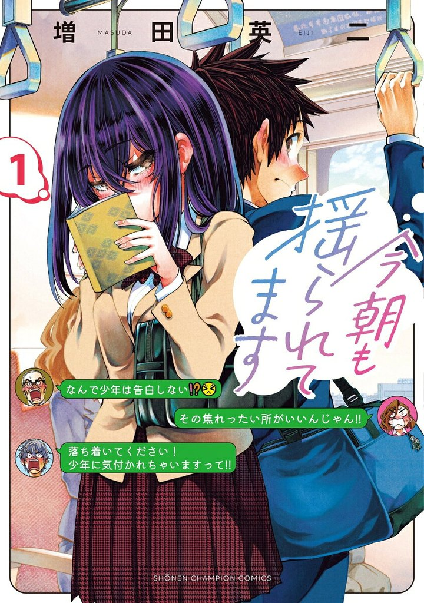
每天早上 6 點 58 分的通學電車上，坐在一起卻連名字都不知道的高中男女。兩人一句話都不說，周圍的上班族、大學教授、OL 卻在內心瘋狂實況、替他們加油。一話一站的距離，甜到讓人想跟著喊「快講啊！」。
想出人頭地的冒險者在迷宮重傷，救她的是曾被稱為最強魔族的「獸王」。代價是：陪他一起去治療受傷的魔物。每個迷宮一種怪病，要先搞懂魔物的生態才能下藥——奇幻版的獸醫冒險，戰鬥也畫得很有力。
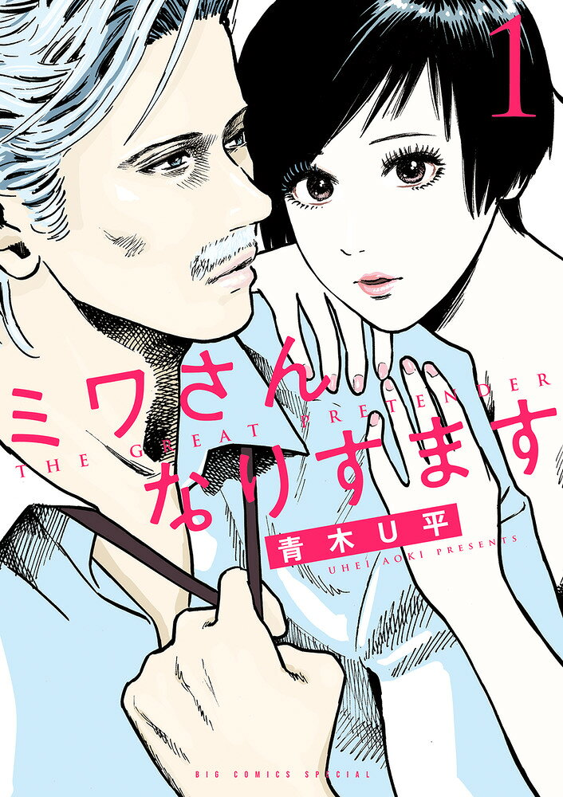
超級影迷的打工女孩，陰錯陽差頂替了同名的「美羽小姐」，住進她最崇拜的大明星家當家政婦。身分隨時會穿幫，偏偏這個家又藏著秘密。一半是心驚膽跳的冒名懸疑，一半是滿滿電影梗的喜劇。
從小立志當太空人的女孩，卻因為在雙語環境長大、兩種語言都說不好而被看扁。遇到一個天才同學後，她開始一步步朝「日本第一位女性太空人指揮官」前進。漫畫櫃分數不算高、票數也少，但這是今年最有份量的得獎作。
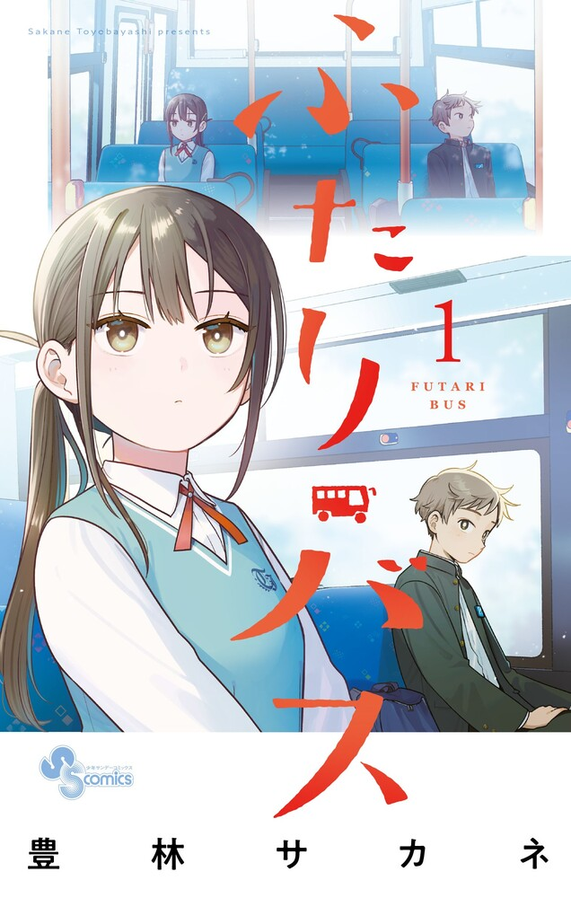
人口三千人的鄉下小鎮，春平和唯一去讀私立中學的小學同學杏，每天搭同一班巴士，卻一年沒講過話。某天終於重新開口，之後每趟車程都多了一點點東西。沒有大事件，靠的是田園風景和兩人之間慢慢拉近的距離感。
認真又好勝的女高中生發現，同班那個神祕男生竟然是深夜廣播節目的投稿高手。不甘輸給他，她也開始寫稿投稿。以「深夜電台」為主軸的青春戀愛喜劇，對聽過廣播、寫過投稿的人特別有共鳴。
《堀與宮村》作畫者的新作。覺得人生一成不變的女高中生，因為母親長期出差借住到鄰居家，和小時候照顧她的優等生哥哥重逢——結果對方變得超級邋遢。輕鬆、可愛、對話節奏很好，是低門檻的甜系戀愛喜劇。
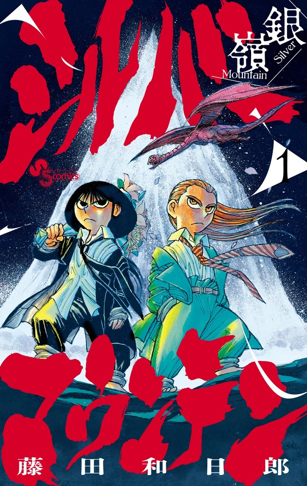
被天狗擄走、闖進「仙境」的少年，從一個人口中聽到這個世界的真相：想變強的人們都在攀登武道的頂峰。《魔偶馬戲團》《魔力小馬》作者的武術奇幻新作，熟悉的熱血、怪誕畫面和大場面都在。
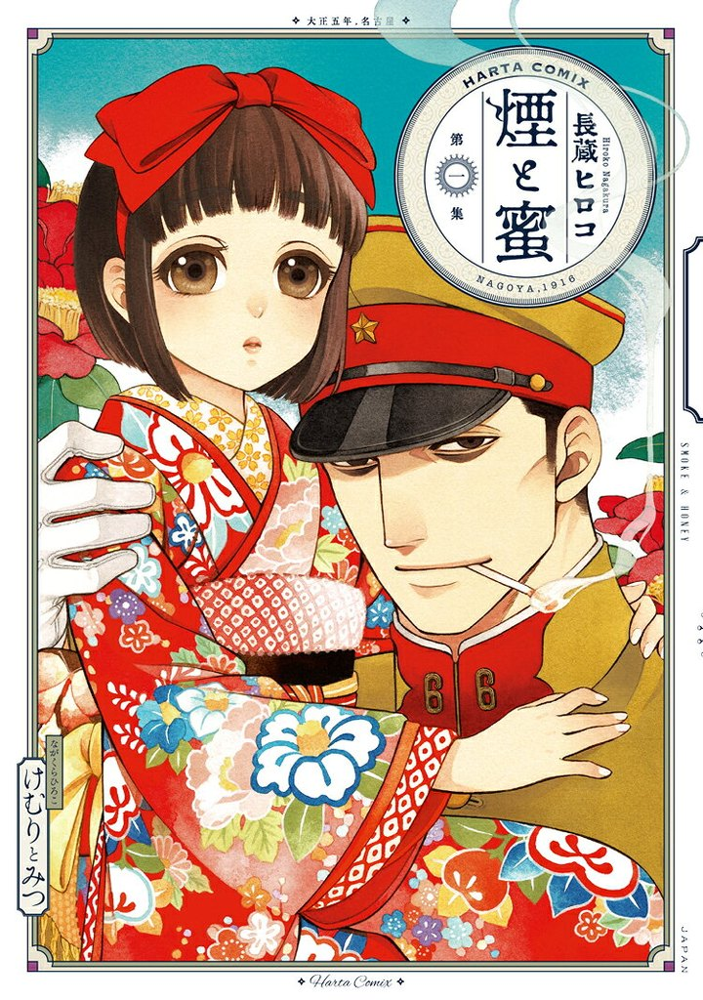
大正五年的名古屋，三十歲的陸軍少校和他十二歲的未婚妻。看起來像危險設定，實際上是一部非常克制、慢熱的時代劇：重點是大正時代的街景、衣著、生活細節，以及兩人如何一點點理解對方。畫工細膩到可以當服飾圖鑑看。
金髮辣妹大學生，突然被寡言的錘起銅器職人求婚。嫁進職人世家代表要面對工作、傳統和一堆長輩，她用辣妹的直率一頭撞進去。甜甜的婚約日常，加上新潟燕三條銅器工藝的細節，看完會想買個銅壺。
科學部的普通高中生想證明學校的都市傳說不存在，結果一次被 5 個咒靈附身，還得跟它們一起住。《失重BOYS》作者的新作，恐怖設定配上滿滿吐槽，是輕鬆好笑的妖怪同居喜劇。
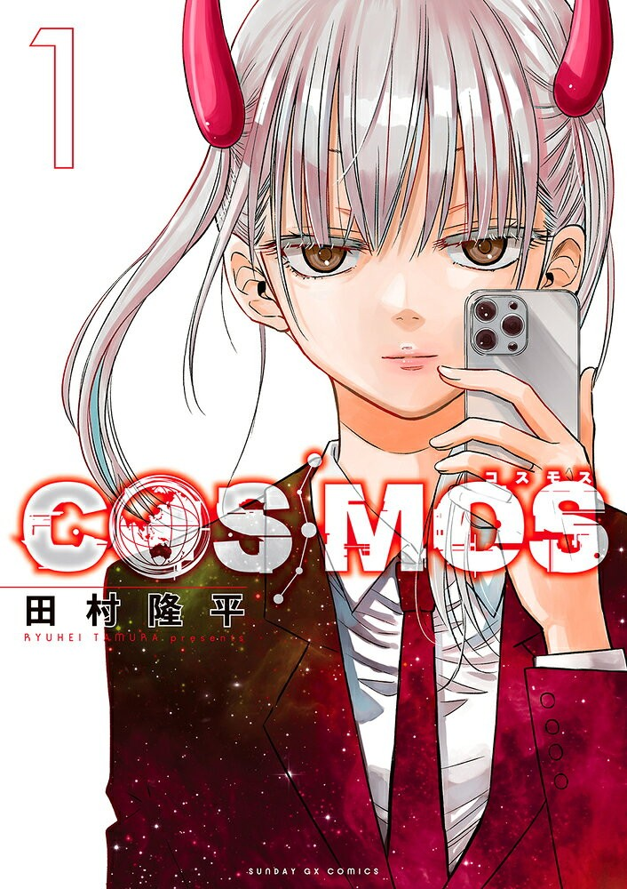
能「聞」出謊言的高中生，被拉進一家專門替偷偷住在地球的外星人理賠的保險公司當調查員。每個案子都是一樁外星人事件，查著查著常常變成關於家人、歧視與孤獨的故事。《惡魔奶爸》作者的新作，節奏俐落又有後勁。
一個會把所有妖魔鬼怪都吸過來的「超靈媒體質」轉學生，遇上一個零靈感、靠近就能把惡靈直接震飛的「超除靈體質」女高中生。真的嚇人的恐怖場面配上超快的吐槽節奏，是怕鬼又愛看鬼故事的人的好選擇。
平成年代沒紅過的偶像團體隊長，31 歲成了菸酒賭樣樣來的廢柴無業女。從小就是她粉絲的高中生表弟，想讓她重新發光，提議去當「同人偶像」拍寫真。又好笑又有點心酸的大人版逆襲喜劇。
花式滑冰少年天才在全日本大賽上突然失控大鬧，被永遠逐出花滑界，流落到冰都苫小牧，碰上一對國中冰球天才兄弟。《黃金神威》作者把自己早年的冰球作品重新來過，熱血、暴力又好笑。
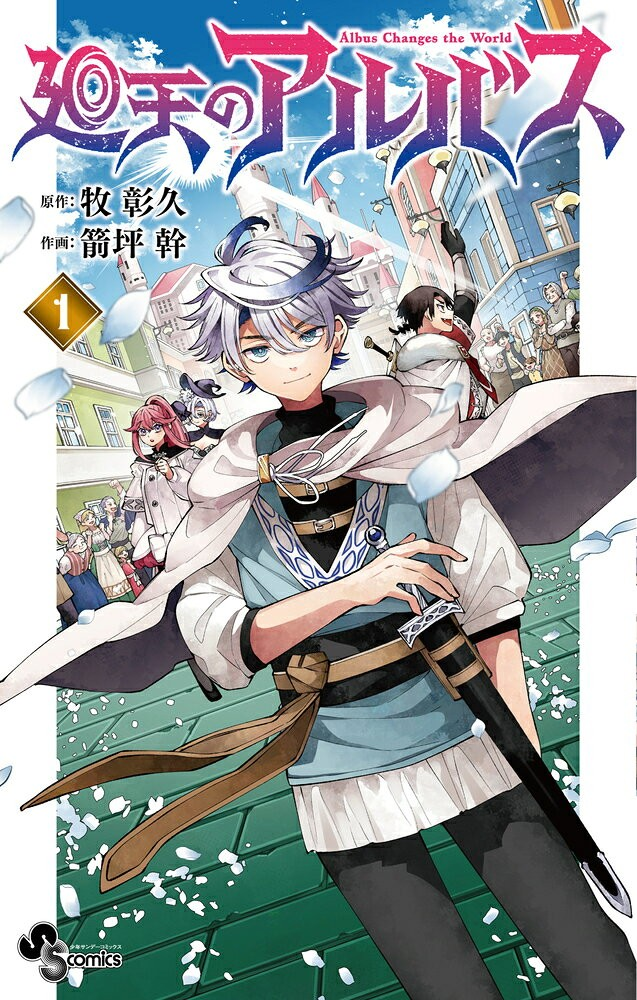
勇者一死就會回到出發那天。他已經第 36 次踏上旅程，靠著無數次死亡把攻略路線越磨越短，只為了趕上那個「完美結局」。像在看高手速通 RPG，第 1 話的反轉就很有衝擊力。
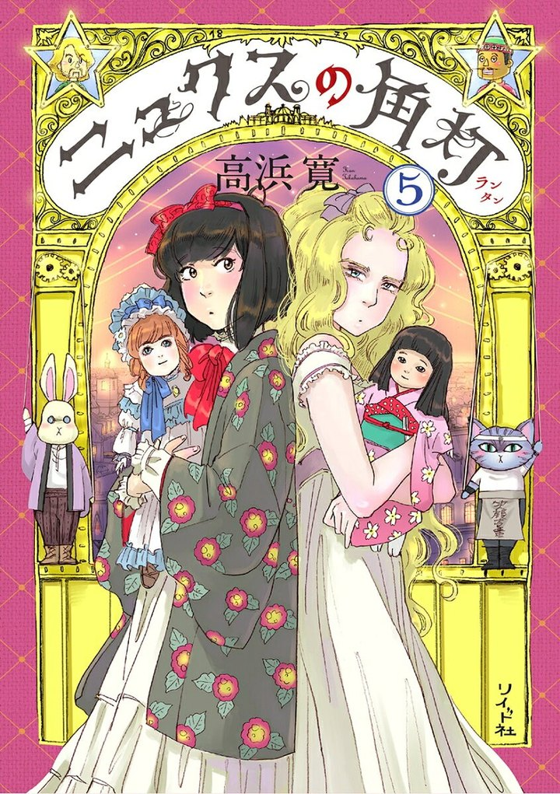
明治 11 年的長崎，在西南戰爭失去雙親的少女，到一家擺滿巴黎萬國博覽會舶來品的古董店工作。透過一件件古董，看見時代和人心的變化，故事也一路延伸到美好年代的巴黎。畫面細緻，慢慢讀很有味道。
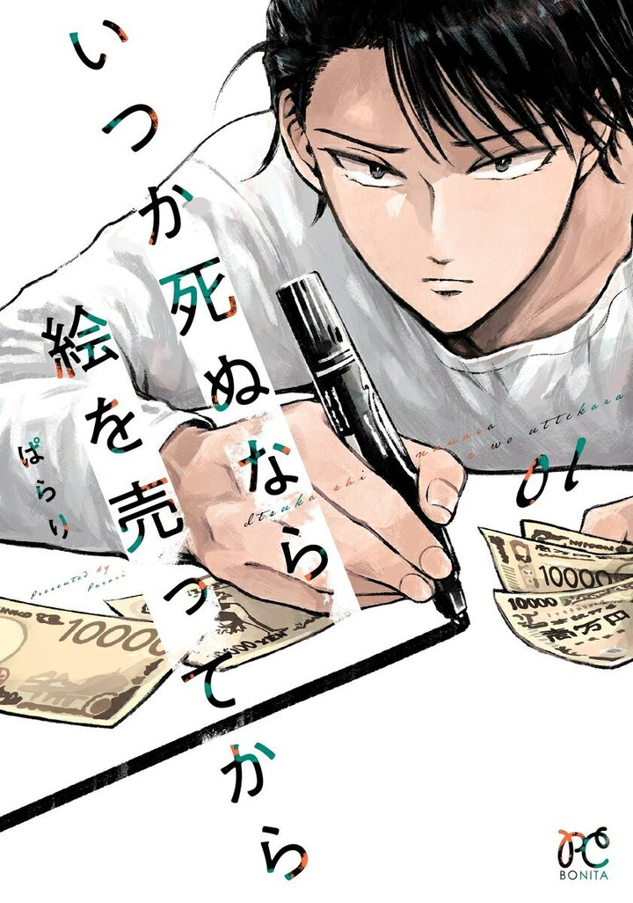
住在網咖、靠打掃過活的青年，唯一的興趣是畫畫。某天一位熱愛藝術的富家青年說要買他的畫，兩人聯手開始做「有價值的畫」。把藝術圈怎麼賺錢、怎麼炒作講得很清楚，又很好看。
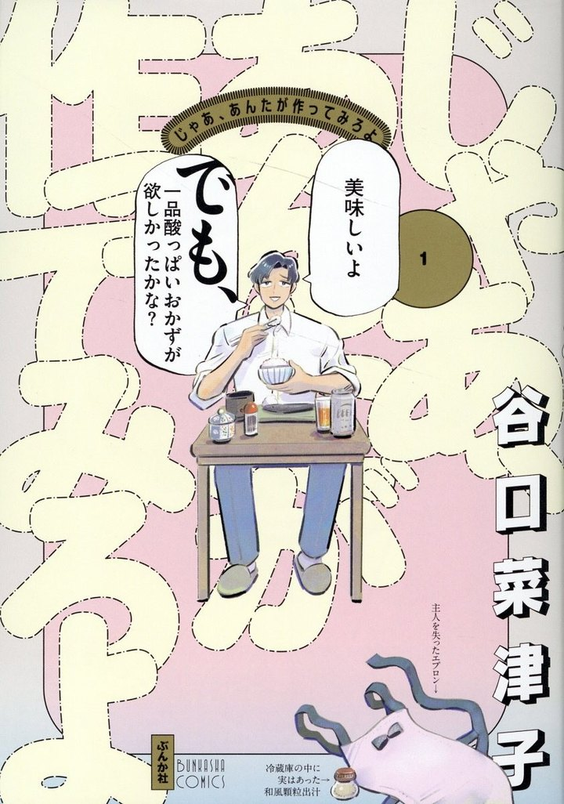
交往多年的情侶，男方求婚卻當場被甩，原因是他覺得「做菜本來就是女生的事」。分手後兩個人各自重新面對自己：他從零開始學做筑前煮，她找回被自己藏起來的喜好。好笑、扎心又好吃。
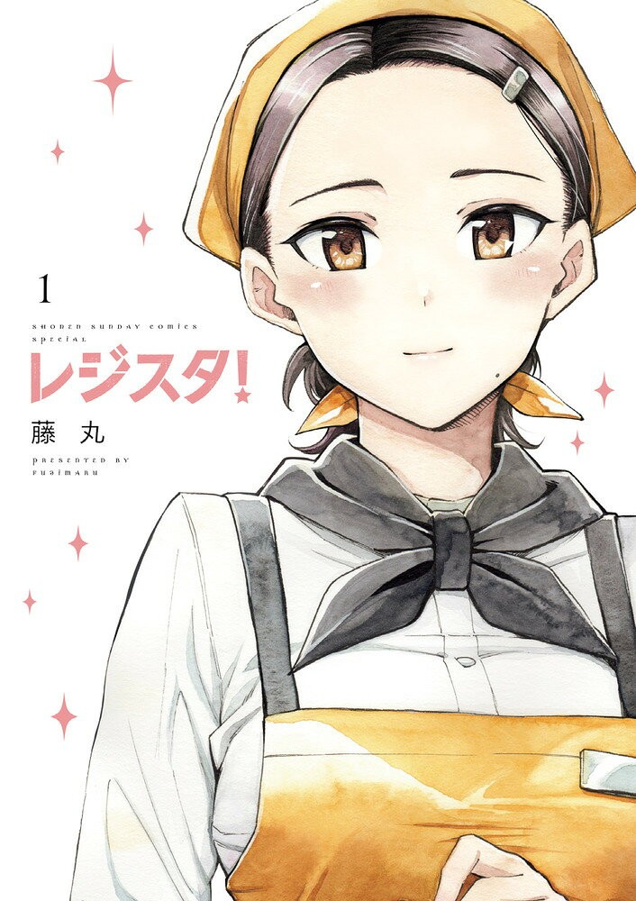
36 歲的自由接案作詞家花田和己，早就不想談戀愛、也不想結婚。搬到新町之後，他在超市收银台對面遇見一個還搞不懂什麼是喜歡的人。兩個人都以為自己的青春結束了，卻在收银台這一側重新開始。
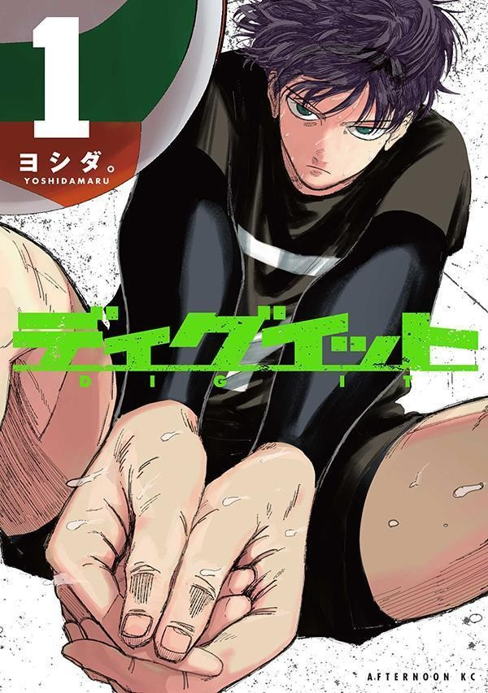
中學曾是王牌攻擊手的岳，因為父親丟下一句「我要把別人的兒子打造成日本第一」而決裂。他改打自由人，用防守去對抗父親捧起來的天才。排球很熱，父子之間的彆扭更熱。
高中棒球部的三個經理女孩，主線不是比賽勝負，而是跑腿、記分、失戀和放學後的閒聊。《擅長捉弄人的高木同學》作者換成經理視角，笑點細、節奏鬆，適合當每日小品看。
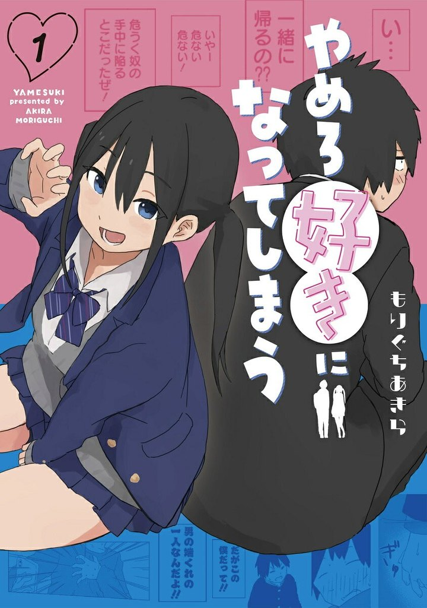
習慣把人看穿、把情感收起來的高中生松浦，被陽氣滿滿的雙馬尾美少女嚴木死纏爛打。她到底是天真還是故意？標題就是他的內心戲：快住手，不然我真的會喜歡上你。
不是天才組成的輕音部，是一群普通高中生認真練團、吵架、演出的故事。曲目多、團員性格清楚，追下去會真的想打開音樂軟體對照著聽。
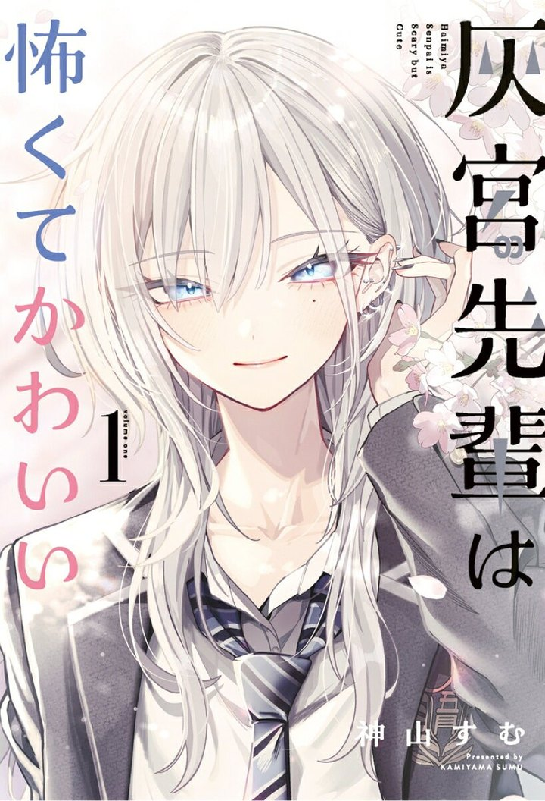
外表兇、力氣大、總被當成可怕學姐的灰宮，其實笨手笨腳又超好懂。後輩一邊怕她一邊被反差萌到。短篇節奏快，一話一個笑點。
公司裡的帥氣同事，私底下是女裝蘿莉塔；另一個上班族外表普通，下班卻是男裝龐克。兩人各自藏著秘密慢慢靠近，看點就是 on／off 切換的反差。
小小派出所裡的四個人，處理的多半不是大案，而是情侶吵架、遺失物和人生諮商。制服底下的本音一點點露出來，讀起來像在聽值班同事聊天。
高中生何吃被稱作狼一樣的陽氣男，卻單方面把暗戀對象當月亮來追。對方冷靜、他自己熱到過頭，追到最後兩人怎麼收場，五卷就能看完。
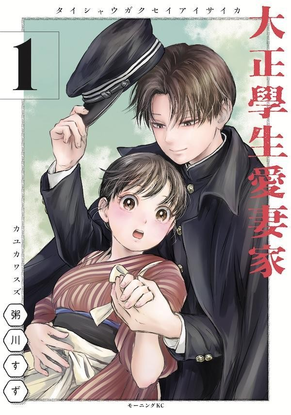
大正時代，還在讀書就結了婚的兩個人，一邊應付學業與世間眼光，一邊過著閃到不行的新婚日常。服飾和街景很美，甜度偏高，想看「乾淨的甜」可以入坑。
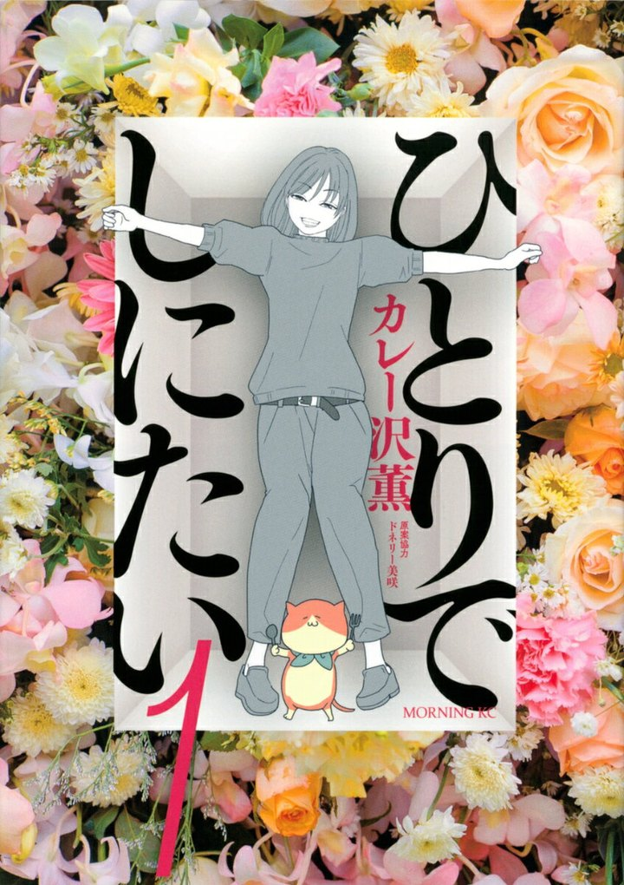
三十多歲的單身上班族，在崇拜的姑姑一個人在家過世之後，開始認真研究「一個人好好死去」需要準備什麼。題材很現實，寫法卻很好笑，錢、保險、家人、老後一路吐槽到底，看完會想去整理自己的存摺。
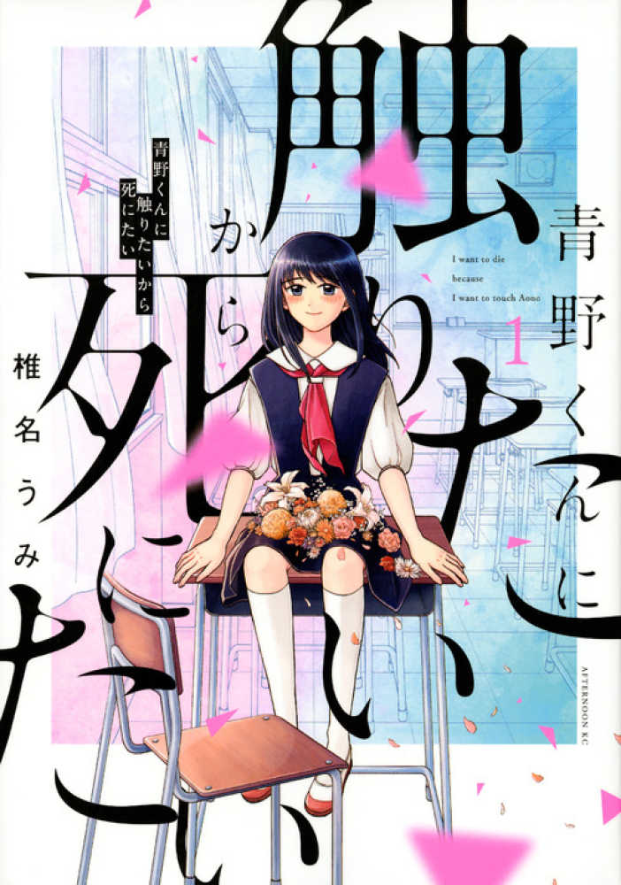
高中女生交到人生第一個男朋友，沒多久他就過世了，然後變成幽靈回到她身邊。開頭像甜甜的靈異戀愛，越往後越像貨真價實的恐怖漫畫，把「想靠近一個人」這件事畫得又可愛又毛骨悚然。
被前男友冷落的三十歲上班族，在夜晚的公園遇見被家人忽視的十二歲少年，兩個寂寞的人慢慢成為彼此的避風港。作品很清楚這段關係的危險，一路正面處理旁人的眼光和界線，畫面安靜、情緒很重，屬於看完會想很久的類型。
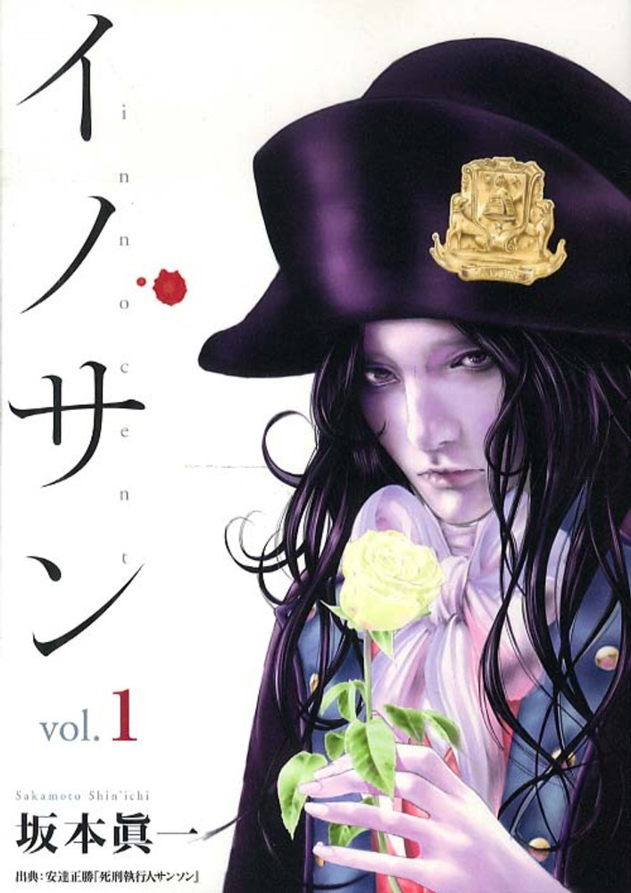
十八世紀法國，世襲劊子手家族的長子夏爾－亨利．桑松，被迫繼承一份他打從心底抗拒的工作。坂本眞一的畫工華麗到誇張，處刑和拷問也畫得毫不手軟，怕血的人要斟酌，但歷史劇的張力非常強。
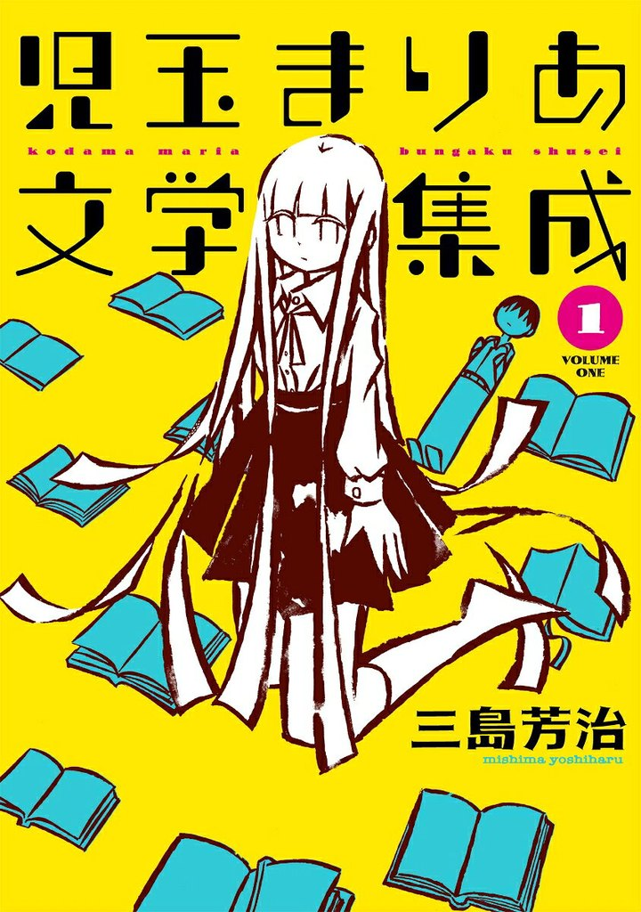
想加入文學社的笛田同學，跟著兒玉瑪利亞在社辦練習她口中的「文學」：用比喻把一片葉子和木星連在一起。畫面極簡、對白像詩，又帶一點說不清的曖昧，喜歡文字遊戲的人會很著迷。
被截稿日追著跑的漫畫家學妹，和可靠（？）的無業學姊，每一話都在想辦法逃避現實：斷網、花大錢吃好料、臨時去旅行。一話完結、節奏輕快，是很適合睡前配的療癒喜劇。
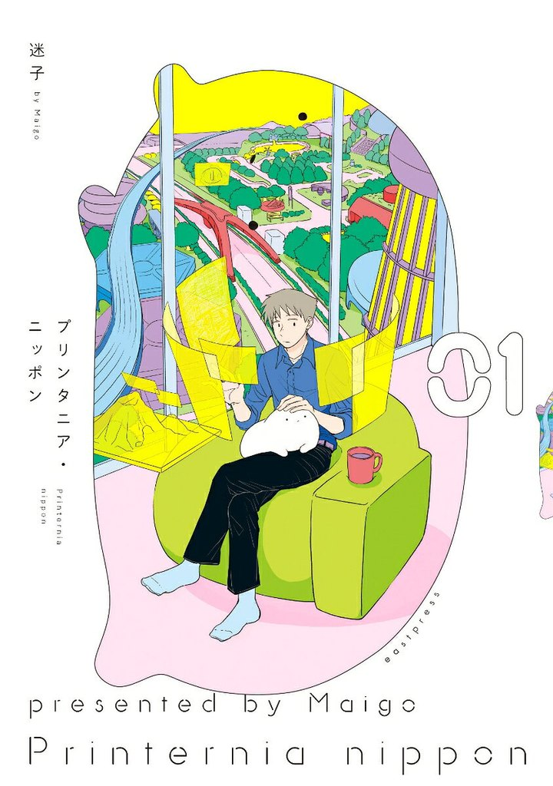
不久的未來，3D 列印機可以印出一種軟 Q 的新生物「布丁塔尼亞」，主角在家印出一隻，就這樣開始一起生活。表面是可愛寵物日常，背景藏著細細的近未來社會設定，越看越覺得這個世界有點怪。
活了上千年的狐妖，從三國時代起一路看著人類，和各式各樣的精怪、神仙與凡人擦身而過。每篇都改編自干寶《搜神記》的一則故事，畫風漂亮、帶點詼諧，對台灣讀者來說題材格外親切。
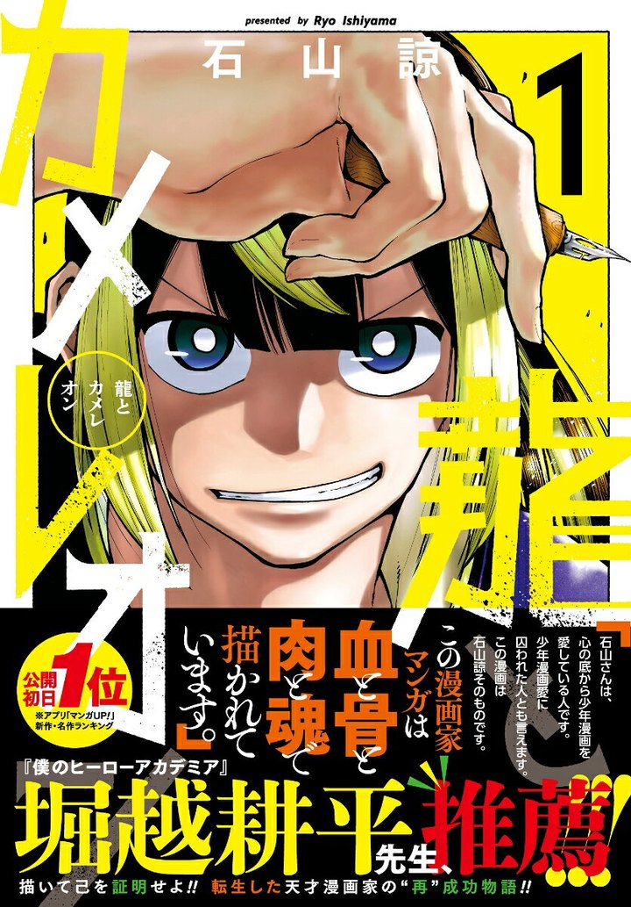
天才漫畫家和嫉妒他到病態的無名漫畫家，因為一場意外交換了身體。「只為畫漫畫而活」的天才從無名新人重新出發，漫畫業界的競爭畫得很有臨場感，是很燃的漫畫家漫畫。
換過數不清的工作、始終不知道什麼才算「有價值的工作」的女主角，遇見一個讓她想再追一次夢的人。以工作和人生為主軸的成年戀愛，戀愛線之外的職場掙扎也寫得很實在。
平安京怪事頻傳，傳說都推給鬼怪作祟；討厭麻煩的少年菅原道真被風流貴族在原業平拉下水，一件件把「鬼」背後的人揪出來。推理之外，藤原家與伴家的朝廷角力也越收越緊。
兒童相談所的職員夏目新，為了問出分屍案的關鍵線索，竟然在會面室向死刑犯「品川小丑」求婚。兩人隔著玻璃互相試探、互相說謊，每一次會面都是一場心理戰。
太會看人臉色、過勞到在辦公室過度換氣的 28 歲上班族凪，乾脆辭職、搬家、甩掉男友，帶著一百萬日圓存款重新過日子。笑點很多，但每段人際關係都寫得很痛很真。
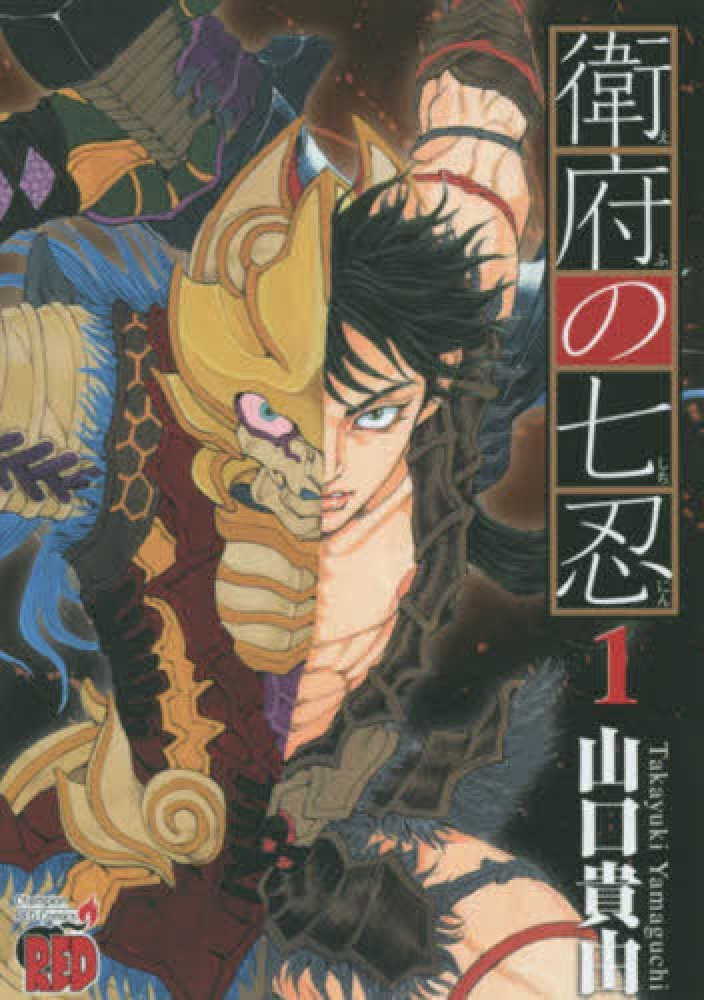
德川幕府剛成立，被新政權踩在腳下的人死後化身「怨身忍者」回來復仇。七名忍者各有一段單元故事，再慢慢交織在一起；《シグルイ》作者的狂氣時代劇，節奏乾脆、下手毫不留情。
亞國公主亞姬的母親被毒殺，身邊只剩一個金髮碧眼的異族奴隸少年薄星。兩人從被冷落的公主和奴隸，一路走進國與國之間的戰爭與王位之爭；少女漫畫骨架，寫的是很硬的大河權謀。
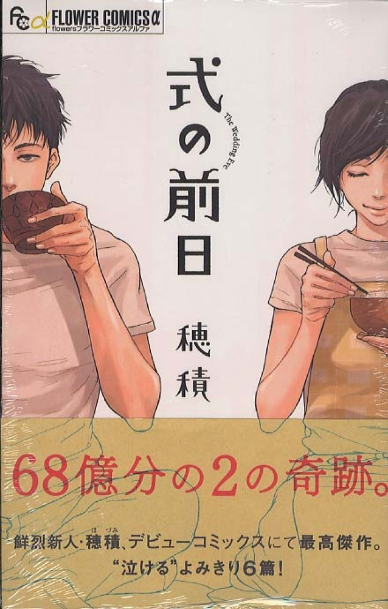
六篇短篇，寫婚禮前一晚、相依為命的兄妹這些很日常的關係，篇幅都不長，結尾常常輕輕翻轉一下，回頭再看會整個不一樣。作者的出道短篇集，一出就拿下このマンガがすごい！オンナ編第 2 名。
五個獨居的女生、五個完全不同的家，從早餐、雜貨到房間怎麼擺，一頁一頁畫得滿滿的。幾乎沒有大事發生，讀起來像在偷看別人怎麼把日子過得舒服。
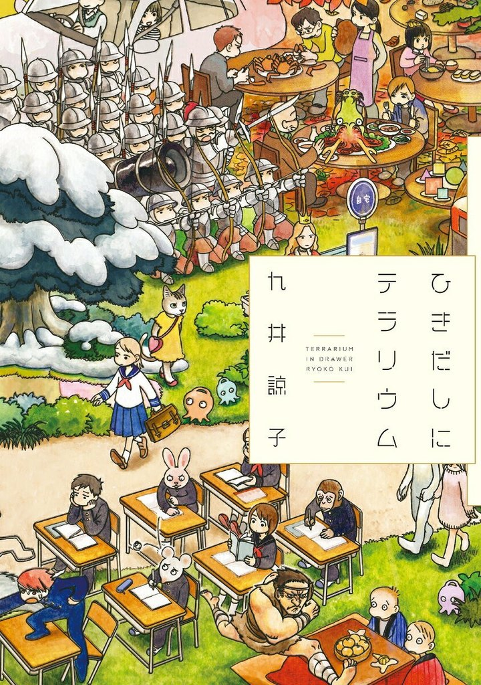
《迷宮飯》作者成名前的極短篇集，33 篇各只有幾頁：時光機情人型錄、吃龍的村莊、把「記號」拿來烹調品嘗……喜劇、童話、SF 隨手切換，每篇都有一個讓人笑出來或愣住的點子。
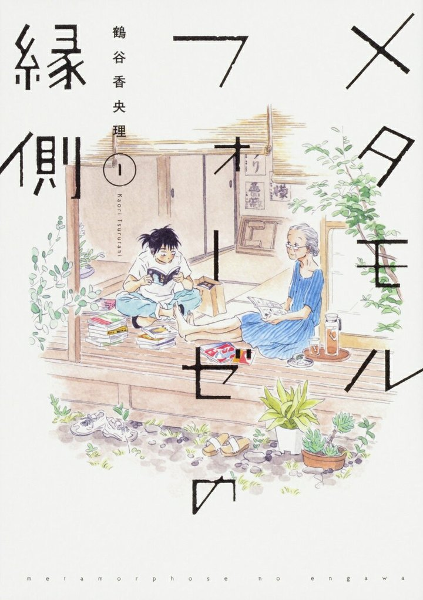
75 歲的獨居老太太被 BL 漫畫的封面吸引，和在書店打工、偷偷愛看 BL 的高中女生變成同好。相差 58 歲的兩個人一起追連載、甚至去同人展，溫柔又帶點酸。
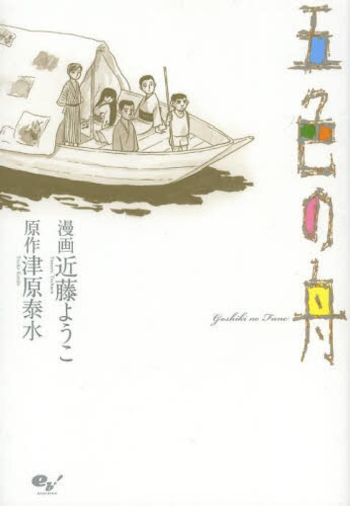
戰爭末期，一群身體異於常人、靠巡迴表演維生的「家人」住在一艘船上，聽說有能預言未來的怪物「件」，決定把牠找來。原作是日本 SF 名短篇，漫畫版用很淡的筆觸畫出命運的重量。
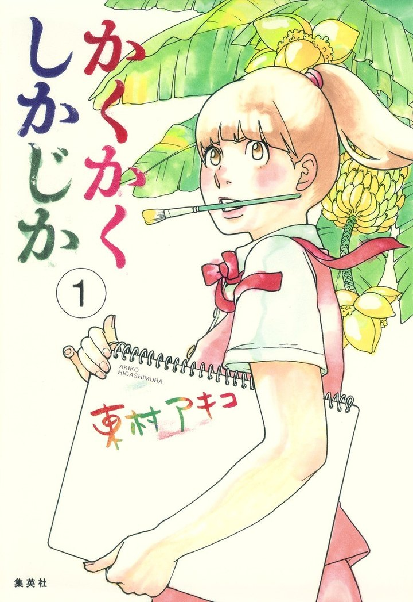
自以為很會畫畫的高中生明子，跑進一間由拿竹刀的毒舌老師開的繪畫教室，被罵到懷疑人生。這是作者東村アキコ回頭寫自己怎麼走上漫畫家這條路，一路好笑，最後卻讓人很想哭。
一場大火燒掉老字號工務店「大留」，年輕的少東茂次失去雙親，決定靠自己把店重建起來；偏偏家裡又住進一位帶著五個孤兒的女孩。把山本周五郎的江戶短篇搬到現代，話少、畫面靜，人情味卻很濃。
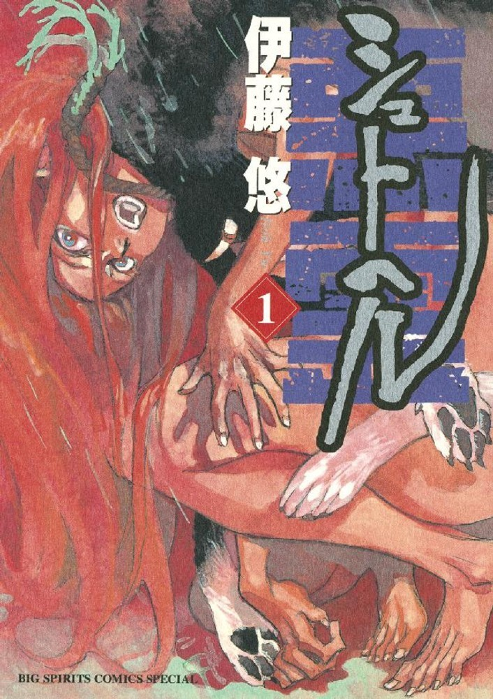
13 世紀蒙古大軍滅西夏，一個被稱為「惡靈」的女戰士一路追殺仇人；另一邊，蒙古王子決心保護快被抹掉的西夏文字。現代高中生的靈魂也被捲進這段歷史。戰鬥畫面狠、節奏快，題材又是少見的「文字存亡」。
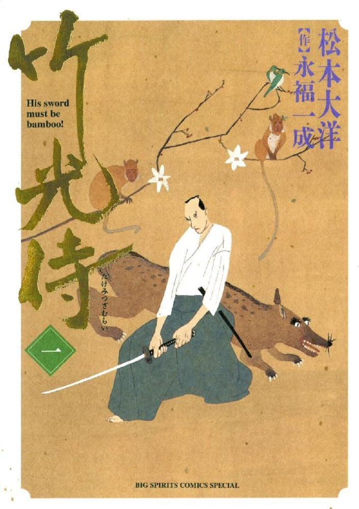
江戶長屋搬來一個怪怪的年輕浪人，把真刀賣了、腰上插著竹刀，跟街坊小孩混得很熟；可是只要他認真起來，周圍的人都會發冷。松本大洋的筆觸畫時代劇，日常很溫，刀光很冷。
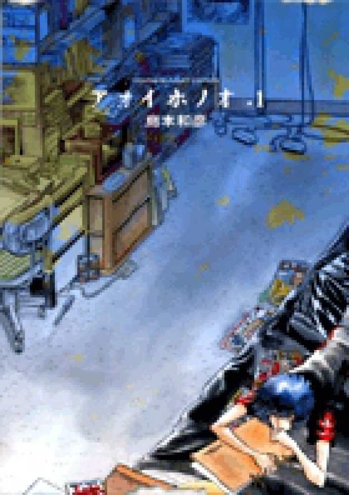
1980 年代初的大阪藝大，自信爆棚的焰燃一心想當漫畫家，卻老是嘴上很強、手上沒畫。作者島本和彥半自傳，同屆的庵野秀明等人也以真名登場，一邊看他自我膨脹、一邊被現實打臉，非常好笑。
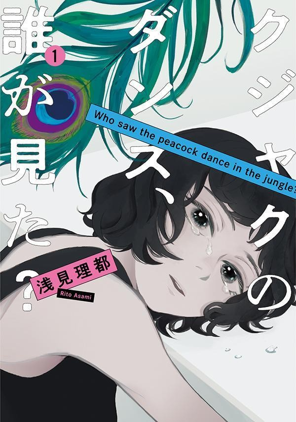
聖誕夜，退休警察的父親在火災中喪命，嫌犯很快被捕；可是父親生前留給女兒一封信：「信上列的人如果被抓，那就是冤枉的。」嫌犯的名字也在上面。女大學生和律師一起追查，每卷都有大翻轉。
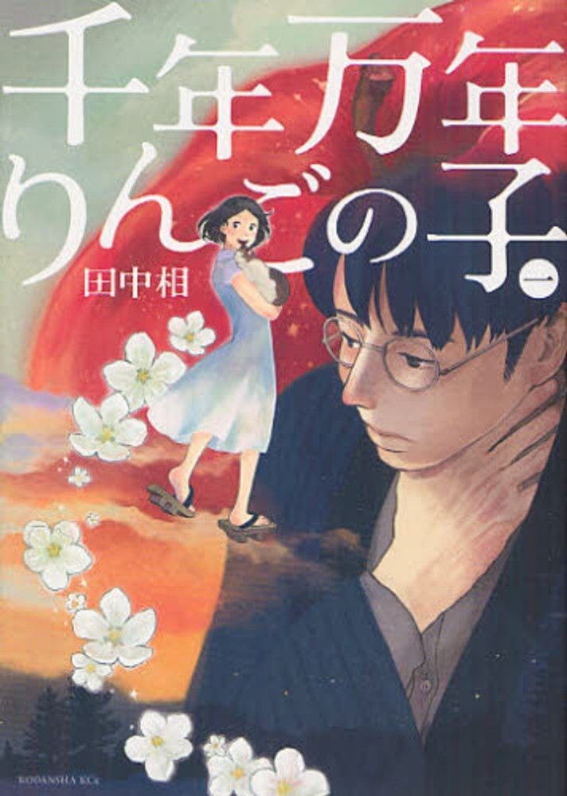
在寺廟長大的孤兒雪之丞，入贅到青森的蘋果農家，跟開朗的妻子朝日過著熱鬧日子；直到他摘回一顆村裡禁忌的蘋果給生病的朝日吃。北國的民俗傳說包著一段很溫柔、也很痛的夫妻故事。
大約百年前，窮作家綿貫征四郎替過世好友看守老房子；院子裡的百日紅好像愛上了他，好友會從掛軸裡划船回來，河童、狐狸也照常上門。一話一種花草，安靜又奇妙。
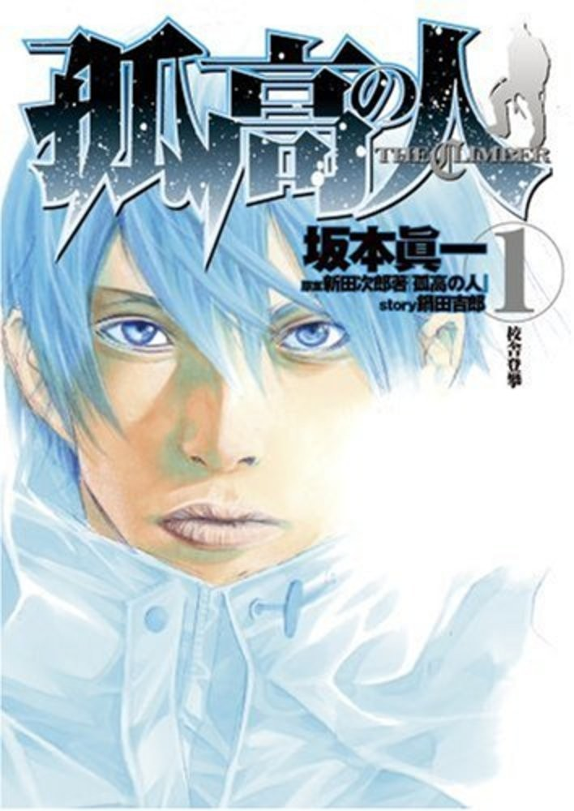
不跟人來往的轉學生森文太郎，被同學一激就徒手爬上校舍外牆，那一刻他第一次覺得自己活著。從攀岩一路走到單人挑戰 K2，畫面壓迫到會手心冒汗，是一部關於孤獨的登山漫畫。
戴大帽子、留大鬍子的民俗學教授宗像伝奇，把看似無關的兩件事放在一起，例如蜈蚣與龍、聖德太子與基督，從神話和古代史裡推出驚人的假說。像在看學術版的推理小說。
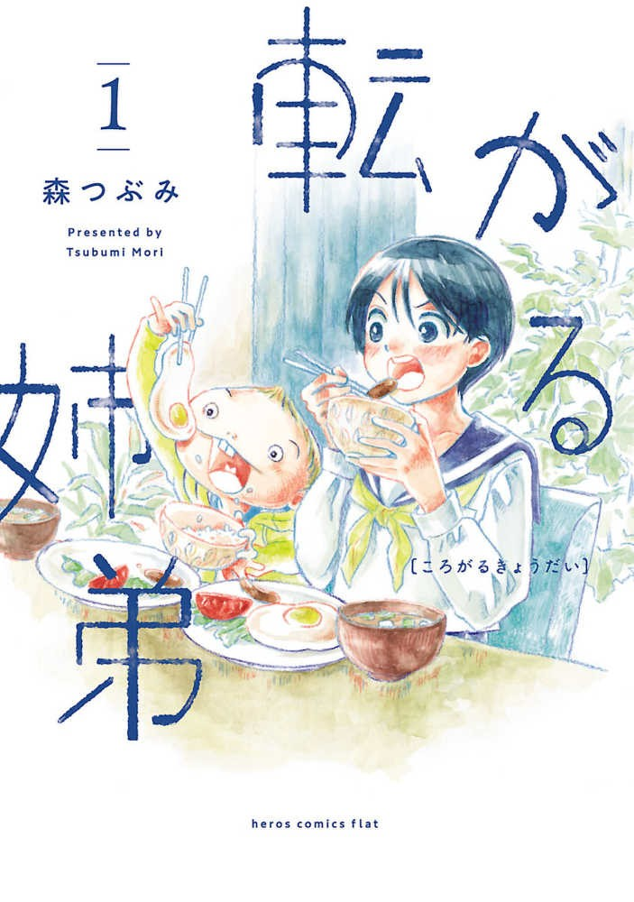
爸爸再婚，高中女生みなと突然多了一個小學生弟弟光志郎；本來想像中是可愛的弟弟，結果是個精力過剩的野孩子。沒有血緣的姊弟一點一點變成家人，每話都好笑，偶爾會被戳到眼眶。
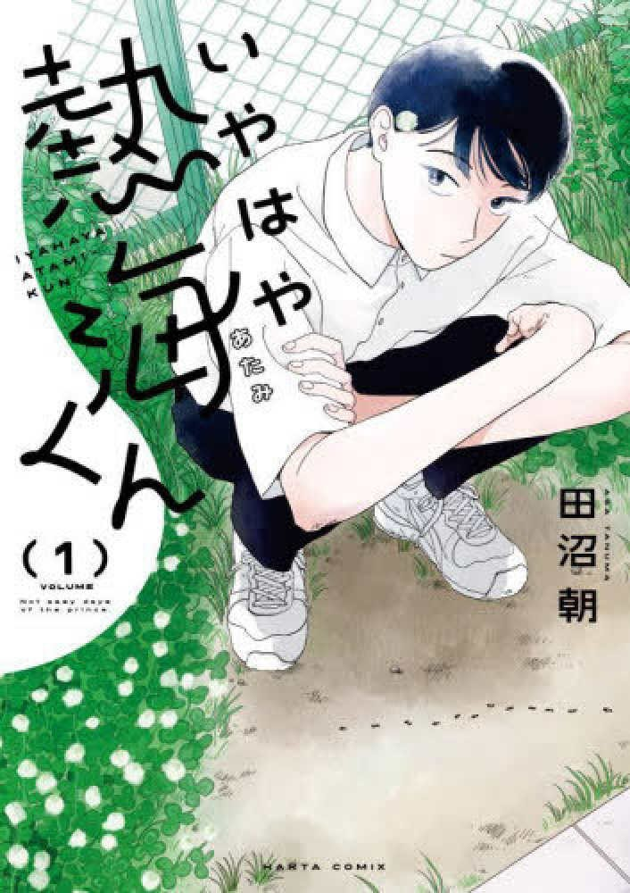
全校公認的美男子熱海同學，超容易一見鍾情，而他喜歡上的都是男生。沒有狗血也不說教，就是看他和身邊的同學一起慌張、失戀、再振作，節奏輕快、對白很有味道。
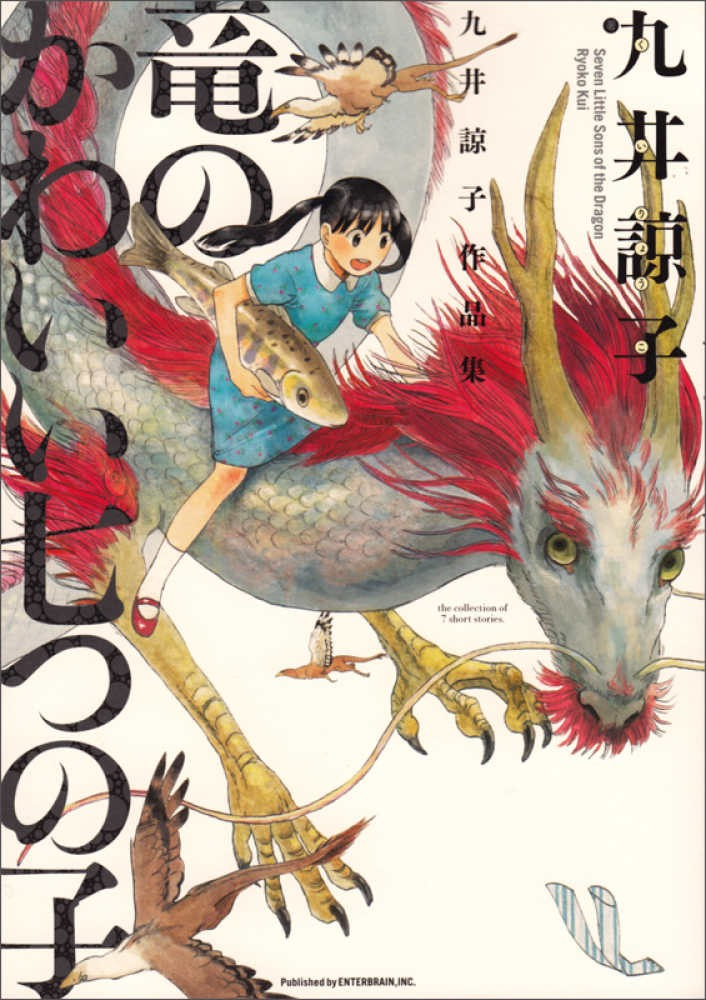
《迷宮飯》作者九井諒子早期的短篇集，七個故事裡有龍、人魚、神明、狼人，講的卻都是人與人之間很日常的感情。每篇幾十頁就能讓人回味很久，很適合用來認識這位作者。
一開始像是一堆互不相干的小故事，有搞笑、有刑警、有機器人；看著看著才發現，全部都繞著一棟叫「外天樓」的奇怪建築打轉。《天國大魔境》作者石黑正數的推理連作，一本就完，建議別先查劇情。
想做遊戲的新人百田モモ，進了一間小遊戲公司 G3，遇上一群固執又熱血的開發者。趕工、預算和業界現實都畫得很真實，是少見把「做遊戲」畫得這麼燃的職場漫畫。
在遊戲公司打工抓 bug 的女大學生礼香，和室友庸子某天突然被困在一間永遠走不完的和室迷宮裡。礼香用找遊戲 bug 的思路研究這個世界的規則，像在看一場腦洞很大的脫出遊戲，兩卷就完結。
不知道自己想做什麼的國中生土屋悠人，認識了住在附近、因傷退役的芭蕾舞者宮本琥珀。兩個人都卡在人生的岔路上，在彼此身上找到一點方向。安藤ゆき（《町田君的世界》）一貫的溫柔筆調。
2048 年的東京，街上不斷出現不像人類下手的屍體；一個叫「源」（Origin）的男人在暗中獵殺混在人群裡的「非人類」，自己也被神秘組織追殺。Boichi 招牌的超精細畫工，加上大量機械和格鬥場面。
未來地球成了禁止進入的自然保護區，人類住在離地 35,000 公尺、繞著地球的環狀巨型公寓裡。剛畢業的少年ミツ接下過世父親的工作：吊在公寓外牆擦窗戶。透過窗戶看見各種住戶的人生，安靜又溫暖。
長相醜陋、處處被排擠的少女累，母親是傳奇美女演員，留給她一支口紅：塗上後親吻別人，就能交換兩人的臉。拿到美貌的累站上舞台，卻得付出代價。關於美醜、嫉妒和演戲的黑暗心理劇。
新手語言學者ハカバ代替受傷的教授到魔界做田野調查，嚮導是狼人和人類混血的少女ススキ。怪物們的語言跟人類完全不通，只能靠叫聲、動作、氣味一點一點猜意思。不是打怪冒險，而是一本認真又好笑的「異種族溝通研究筆記」。
升上高中的直達暫時住進叔叔家，結果那是一棟怪人合租屋：漫畫家叔叔、女裝占卜師、大學教授，還有一位冷淡的 26 歲上班族榊小姐。後來直達發現，自己的家人和榊小姐之間有一段說不出口的過去。對話很輕，情緒很重，三卷完結剛剛好。
出版不景氣的文藝雜誌編輯部，收到一份完全不照投稿規定、連作者聯絡方式都沒有的新人獎稿件，卻是真正的傑作。作者是 15 歲的鮎喰響：不讀流行小說、不懂人情世故，誰踩到她的底線就直接動手。看一個天才怎麼一路撞破文壇的規矩。
新宿巷子裡一家半夜 12 點才開門的小食堂，菜單只有豬肉味噌湯套餐，但只要有材料，老闆什麼都願意做。來吃飯的有黑道、脫衣舞孃、上班族和過氣藝人，每一夜一道家常菜帶出一個客人的故事，短短十頁就有餘韻。
現代的腦外科醫生南方仁，一場意外後醒來竟在幕末的江戶。沒有抗生素、沒有像樣的手術器材，他只能用手邊的東西救人，甚至從頭試著做出青黴素。每救一個人都可能改變歷史，他也一步步被捲進動盪的時代。
倫敦的大學生 Al 在回宿舍的路上，發現口袋裡多了一把刀，而那正是倫敦市長命案的凶器，他瞬間成了被栽贓的嫌犯。聽完他說法的刑警 Ellis 提議兩人聯手找出真兇。三卷完結的英倫懸疑，畫面簡潔、氣氛很冷。
1930 年代，一支大學探險隊深入南極，在冰原深處發現遠古生物的遺骸，以及一座不該存在的巨大石造都市。田辺剛用極密的黑白筆觸，把洛夫克拉夫特的經典小說畫成冷到骨子裡的漫畫，越往深處越不安。
原爆十年後的廣島，倖存的皆實在平凡的日子裡努力笑著，心裡卻一直覺得自己不配活下來。後半跳到現代，她的家人帶著同一段記憶過日子。沒有血腥場面，用很淡的筆觸寫戰爭留下的東西，薄薄一本卻很重。
訪問當年在「漫畫之神」手塚治虫身邊工作過的助手、編輯和漫畫家，用漫畫重現他們親眼看到的手塚：截稿前連熬好幾夜、對作品近乎偏執，在事業低潮時畫出《怪醫黑傑克》。像一部熱血的漫畫業界紀錄片。
秋姬是綠峰山天狗神明和人類女子生的女兒，外表普通，只是力氣大得異於常人。青梅竹馬小瞬一直勸她一起修行當天狗，她滿腦子卻只有暗戀的同班男生。妖怪設定配上普通女高中生的戀愛煩惱，溫吞又好笑。
48 歲的上班族中原博史喝醉搭錯車，回到童年住過的鳥取倉吉，在母親墓前一陣暈眩，醒來竟變回 14 歲的國中生，而且是父親離家失蹤的四個月前。帶著大人的記憶重過一次少年時代，他會怎麼面對那個夏天？谷口治郎安靜又溫暖的代表作，兩卷就完結。
戰國末期，11 歲的農家女孩零里在長篠之戰後的追殺中失去全家，被武田家的武將岡部丹波救下。她一心想「像家人一樣替別人擋刀而死」，練出一身劍術；15 歲那年，因為長得和武田信勝一模一樣，被選為他的影武者，捲進正在走下坡的武田家。《寄生獸》岩明均寫腳本，室井大資作畫。
郊外一座巨大的公寓社區接連發生離奇死亡，警方怎麼查都找不到線索。剛搬進來的小女孩悅子察覺到，社區裡藏著擁有超能力的「某個人」，一場沒人看得見的對決就此開始。大友克洋在《AKIRA》之前畫的超能力恐怖經典，建築崩塌的畫面到現在看還是很震撼，一本就完結。
室內設計師川奈つぐみ在聚會上重逢高中時暗戀的學長鮎川樹。他已經是建築師，卻因為大學時的一場意外下半身癱瘓、靠輪椅生活。她發現自己還是喜歡他，但兩個人要面對的不只是心意，還有生活裡一件件很實際的難題。作者實際採訪輪椅使用者，寫得溫柔又不迴避現實。
16 世紀的神聖羅馬帝國，少女艾拉的養母被教會捏造罪名，當成魔女處死。艾拉被送進專收「魔女之子」的修道院，那裡用信仰和刑罰把孩子馴服成聽話的修女。她決定在這座牢籠裡活下來，並向主導獵巫的總長復仇。靠智慧和意志硬撐的生存劇，6 卷一口氣完結。
漆間家的長女小亂是個笨手笨腳的小魔法師，只要穿上那雙大人尺寸的鞋，就會變成成熟美女、還能施展魔法，所以三天兩頭闖禍，讓哥哥陣忙著收拾。媽媽是最強的魔女，正在遠方的魔法村封住怪物「骸虫」的巢穴。畫面華麗又有點古怪的魔法家族喜劇，後半慢慢轉向正經的戰鬥。
天才外科醫朝田龍太郎因為一場醫療事故被逐出大學醫局，隱居度日。想改革腐敗醫院、爭取教授位子的副教授加藤晶找上門，請他主刀高難度的心臟手術。朝田召集一支各有本事的手術團隊，一邊救人，一邊撞上大學醫院的派系鬥爭。熱血醫療劇加上政治角力，全 25 卷完結。
詐欺師分三種：騙錢的「白鷺」、騙感情的「赤鷺」，還有只吃白鷺和赤鷺的「黑鷺」。黑崎的父親被詐欺師設局，全家走上絕路，只剩他活下來。長大後他成了黑鷺，專門把詐欺師騙回去、把錢還給受害者。每個案子 2～9 話就講完一個騙局，手法寫得很細，看完會對真實世界的詐騙多一分警覺。
12 歲的杏因為爸媽離婚，跟著媽媽搬回島根的娘家，在鄉下認識了住附近的大悟，還有藤和椎香。沒多久，媽媽卻自殺了。故事從那年夏天開始，跟著杏一路長大成人，寫初戀、離別和重逢，像沙漏一樣一點一點累積時間的重量。
從 MIT 畢業的天才少年燈馬想，回到日本插班進一所普通高中，被好動的同學水原可奈拉著到處跑，捲進各種案子。每個案子一兩話就完整解開，詭計常常牽涉數學、物理和歷史，最後一句「Q.E.D.」收尾。不靠血腥，靠邏輯讓人拍桌。
寵物店裡一隻賣不掉的成貓，價格一天天往下降，牠也慢慢放棄被誰愛的念頭。直到一位剛失去妻子的大叔出現，一眼就說「這隻貓給我」。愛人的大叔和想被愛的貓，在每天的小事裡把彼此的心補起來，好笑又很容易鼻酸。
1936 年柏林奧運期間，一名日本留學生被殺，因為他握有一份「希特勒有猶太血統」的秘密文件。在神戶長大的兩個好朋友，德國外交官之子阿道夫・考夫曼和猶太少年阿道夫・卡米爾，被這份文件和戰爭撕裂成敵人。三個叫阿道夫的人，交織出手塚治虫最沉重的一部長篇。
一個很像明治時代的架空帝國。子爵家次男公頼為了阻止姊姊被逼婚，14 歲就進宮當見習侍從，服侍年輕的彰子女帝。上班第一天，女帝親筆的繪皿和畫帖就被人弄壞，眼力很好的公頼一邊解開宮裡的小事件，一邊被這位意外有另一面的女帝吸引。宮廷和服裝細節畫得很講究，戀愛寫得很克制。
江戶田沼時代，町方官吏家的次子勝十郎走進五代目市川團十郎身邊的歌舞伎世界。被稱作「幻之漫畫家」的一ノ関圭，隔了二十多年才出的新作，用極細的寫實筆觸把芝居小屋、浮世繪和江戶市井畫得像在眼前，一頁可以看很久。
如果歷史上的牛若丸，其實 16 歲以前就死了，那後來打倒平家的「源義經」是誰？平安末期，一個無父無母、長得和牛若丸一模一樣的少年漂太，被拉來頂替他的身分。一個街頭少年，就這樣頂著義經的名字走進源平之爭。
高中生福和男友宝感情很好。16 歲那年冬天，福的身體出現變化，驗孕棒上是陽性。要怎麼跟家人開口、要不要生下來、未來還能不能照原本的樣子走？不煽情、不說教，一步一步寫兩個孩子和身邊大人做每個決定時的重量。
每幾話換一個主角，從高中生一路寫到出社會的大人，各自談著笨拙的戀愛。看似分開的故事慢慢串在一起，中心是一個女孩高一那年夏天失去重要的人之後，一直沒說出口的心事。いくえみ綾把日常對話寫得很真，安靜但後勁很強。
北大路輝太郎推掉強豪校的推薦，和少棒時代的四個隊友一起進了公立的都立あおい坂高中，只因為六年前答應過表姊鈴緒「要帶妳去甲子園」，而她現在正是這支弱小棒球隊的監督。左投下勾的速球加上一群各有絕活的隊友，一場一場往上打，熱血但比賽寫得很紮實。
上班族椎野一邊吃拉麵一邊看新聞，才知道從小一起長大的好友麻里子死了。她知道麻里子多年來被父親虐待，於是懷裡揣著刀衝進麻里子家，把骨灰搶了出來，抱著它搭上客運，往麻里子說過想去的海邊走。一卷四話，粗暴又溫柔的一場告別。
小鎮藥師柯萊特每天被病人追著跑，累到受不了跳進井裡，醒來卻到了冥府，還被要求替冥王黑帝斯看病。從此她白天在人間行醫、定期下冥府出診，跟冷淡又笨拙的冥王、一群骷髏小兵慢慢熟起來。工作和戀愛都寫得很踏實，溫暖又好笑。
1989 年北海道一所小學發生毒殺案，21 人死亡，當地警察佐野被判死刑。28 年後，背負著殺人犯之子污名的田村心來到案發地，卻在一場濃霧中回到了 1989 年，見到了還沒出事的父親。他想阻止慘案，卻發現真相比想像的更複雜。
在一個人人相信轉世的國家，罪人死了刑期也不會結束，轉世的下一代要接著服刑。少年哈洛一出生就在監獄裡，背著前世犯下的大罪，卻完全不記得自己做過什麼。故事跨越好幾代人，問的是：贖罪到底是為了誰。
國三生仙石晃搭的畢業旅行班機墜落，醒來發現自己在一座地圖上沒有的島上，到處都是早該滅絕的古代猛獸。一群國中生和老師得在島上活下去，人跟人之間的猜忌，比野獸還危險。節奏很快的生存冒險。
優太的媽媽想留下抗病的紀錄，要他一直拍到她死去。他把影片剪成電影在校慶放映，被全校罵成爛片。正想尋死時，一個叫繪梨的女孩說她被這部片打動，拉著他一起看電影、拍下一部。約 200 頁一口氣讀完，看完會想回頭再翻一次。
作家的妻子是東京藝大的學生，每天在家做出各種怪事，他忍不住潛進這所日本最難考的藝術大學採訪。吹口哨進樂團的、在校園裡做巨大雕塑的、為了一個音練到半夜的，全都是真實存在的人。好笑又讓人佩服的大學紀實。
岸田純看得見死人，身邊總跟著已經變成幽靈的青梅竹馬早川。他一次又一次被捲進怪異事件，有時是怪物，有時是比鬼還可怕的人，每次都靠早川救命。畫面陰暗、血腥場面不少，但單元故事一篇比一篇怪，很適合想找冷門恐怖漫畫的人。